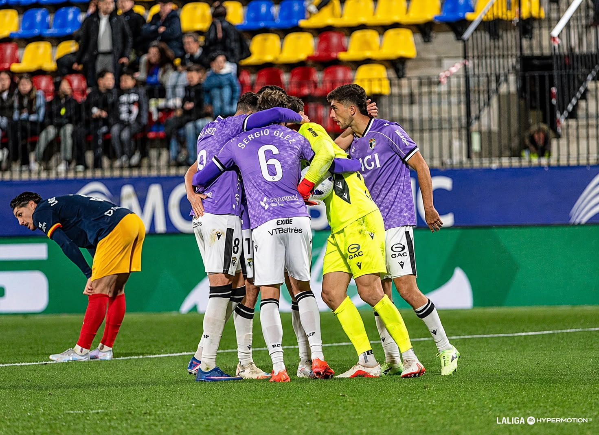

El Burgos CF vence al Andorra de Piqué por dos goles a tres en un partido frenético en la primera parte que acabó con el Andorra mejor que el Burgos, buscando un empate que se encargó de evitar un excelente Cantero.
No fueron los mejores 90 minutos del conjunto blanquinegro. No acabó de encontrarse cómodo con un Andorra que dificultó, y mucho, la salida del Burgos al Estadi d'Encamp. Precisamente por esto mismo, esta victoria cobra más importancia porque, a pesar de no encontrar su fútbol el de Sergio Francisco, el equipo supo competir y sufrir para conseguir la segunda victoria fuera de casa de la temporada. Estos partidos donde quizás no despliegas tu mejor fútbol y sacas los 3 puntos son los encuentros que determinan la posición de un equipo al final de una temporada. Victoria que para mí que dice mucho. Estoy seguro de que hace tres o cuatro años este mismo tipo de partido hubiera acabado en una derrota burgalesa. Porque en el día de ayer no se ganó por fútbol, se ganó por galones.
Arrancaba el Andorra-Burgos CF correspondiente a la jornada 11 de la Liga Hypermotion y lo hacía de forma frenética.
Y es que en el minuto 4, un disparo desde la frontal de Schneider que se estrellaba en el larguero nos hacía ver que iba a ser una primera parte con muchas ocasiones y goles, como así fue.
El Andorra se mostraba muy activo en el inicio, pero Curro Sánchez no tardó en responder en una acción desde el balón parado que pilló a la defensa andorrana desordenada y que Karrikaburu se encargaría de finalizar tras cazar el rechace de Owonvo al balón pícaro del andaluz.
Poco le duró la alegría a los castellanos, que verían cómo seis minutos después (19') Lautaro ponía las tablas en el marcador aprovechando un rechace de Ander Cantero.
Este gran número de llegadas se traduce en dos equipos que dejaron muchos espacios y practicaron un fútbol vertical y eficaz, dado por algún error de ambas defensas.
Como el que propició el segundo gol del Burgos en una acción a balón parado desde el córner que encontró a un Oier Luengo que remató libre de marca para anotar su primer tanto con la camiseta blanquinegra (25').
Con el segundo gol, el Burgos CF empezaba a dar sensación de superioridad, aunque no acababa de encontrarse cómodo. A raíz de ello, llegó una mano de Martí Vilà que acabaría con un penalti que se encargó Curro Sánchez de transformar, engañando a Owono (34').
Con una ventaja amplia como era ese 1-3, el Burgos parecía que iba a pasar a tener el partido controlado, pero no fue así. El desorden del equipo, es decir, la gran distancia de una línea con otra, hacía que el Andorra llegase con peligro al área defendida por Cantero.
Desde el minuto uno, la defensa burgalesa permitió al Andorra finalizar muchas de sus llegadas, lo que les hacía ver a los de Sergio que iban a tener que sufrir, y mucho, para llevarse los 3 puntos de su salida.
Los de Carles Manso no bajaron los brazos pese al resultado negativo y consiguieron, antes del descanso, recortar la distancia con un gol de Jordi Cano (42') tras una transición rápida de los locales que les dejaba con vida para afrontar una segunda parte donde irían a más.
El arranque de la segunda parte dejaba claras las intenciones del bloque pirenaico, que buscaba remontar el encuentro. Fue Lautaro el primero que probó fortuna con un disparo lejano que atajaba el guardameta navarro.
Esta iniciativa del conjunto tricolor hizo que el Burgos pasara a defender en su área como podía los constantes ataques rivales de aquí al final de los 90 minutos.
Las acciones andorranas llegaban una tras otra. El empate estaba al caer. Los castellanos aguantaban como podían gracias a Cantero, que salvó a su equipo en numerosas ocasiones.
Sergio Francisco veía cómo, con el paso de los minutos, el Andorra avanzaba metros que hacían al Burgos estar cada vez más retrasado. Como consecuencia de ello, dio entrada a jugadores defensivos como Ignasi Vilarrasa y Sergio González con el objetivo de aguantar el resultado.
Finalmente, el Burgos CF supo sufrir con mucho carácter y galones y se acabó llevando los 3 puntos frente a un Andorra que lo intentó por activa y por pasiva, pero no consiguió traspasar el muro blanquinegro encabezado por un sublime Ander Cantero.
Victoria de mérito que hace a los castellanos afrontar de mejor manera una semana difícil en la que va a tener otros dos partidos. El primero de ellos, el jueves frente al Laredo en la primera ronda de la Copa del Rey. El último de ellos, el tercero en siete días, será ante el Castellón el domingo en el estadio municipal de El Plantío.